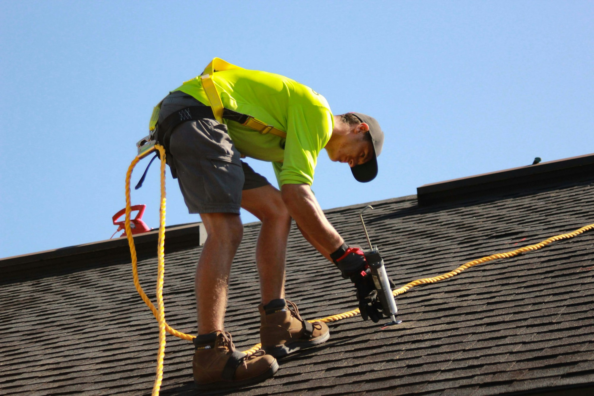
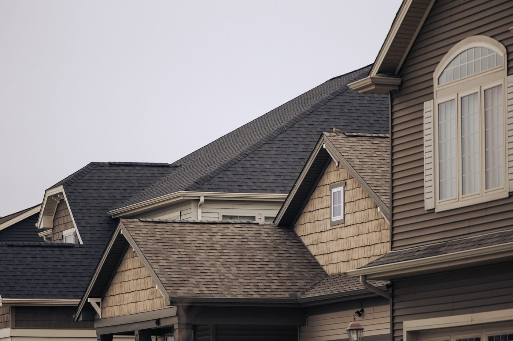

We will tell you the truth about your roof.
Even when the truth is that you do not need one yet. Family owned in Des Moines since 1996, and about a third of the reports we write say leave it alone.
- Licensedand insured in the State of Iowa
- Two generationsDale Tolliver started it, Wade runs it now
- Polk, Dallas, Warrencounties, plus Jasper and Madison
- Same dayyour report lands before the crew goes home
Every spring, the same thing happens here.
Hail comes through. Within a week, trucks with out-of-state plates are working the neighborhood, and somebody walks your roof for six minutes and comes down with a number.
-
You cannot check any of it
You did not see what they saw. There are no photographs, no measurements, and no way to tell an honest assessment from a sales pitch that happens to be standing on your gutters.
-
So people sign, or people wait
They sign because the number sounded fine, and by October the crew has left the state. Or they wait two more winters and learn what standing water does to decking, and to the ceiling underneath it.

What you get, free
A roof inspection you can actually read.
Forty-five minutes on your roof, and the whole thing written down. Photographs close enough to see the granule loss and the cracked boot around your vent stack. How many years you have left, with the reasoning attached. An itemized estimate that holds for ninety days.
No deposit, no card, no obligation, and no second visit unless you ask for one.
Roofs first, and the rest of the envelope too.
Everything that keeps water on the outside of your house. Most of our work is asphalt shingle replacement, but the crew that tears off a roof is the same crew that hangs the gutters, so it makes sense to do both at once.
-
Roof replacement
Full tear-off down to the decking, new underlayment, ice and water shield in the valleys, architectural shingle. One day for most metro houses.
-
Repairs
A repair is often the right answer, and we will say so. Boot replacements, flashing, a section of blown shingles, decking after a limb comes through.
-
Gutters and downspouts
Seamless aluminum formed on site, sized to the roof above them. Half the "roof leaks" we get called out for are gutters that stopped moving water.

They told me my roof had four good years left and did not try to sell me a thing. I called them back in year four.
Renee KasparBeaverdale
Two other companies gave me a number in the driveway. Tolliver gave me nineteen photographs and a line-item estimate the same night.
Tim OkoroAnkeny
Storm rolled in early and the decking was open. The crew tarped the whole thing down and stayed until it held. Nobody asked them to.
Marilyn SteenhoekWaukee

Four things we put in writing.
-
We will tell you when your roof is fine
Roughly a third of our reports end with some version of leave it alone and call us in a few years. That is not a lost sale. That is the point of the visit.
-
We do not knock on doors after a storm
If a Tolliver truck is on your street, somebody on your street called us. We have never run a canvassing crew and we are not going to start.
-
The estimate is the price
The only thing that changes it is rotted decking we could not see until the tear-off, and we photograph every sheet before we replace a board.
-
One follow-up, then silence
We call once, about a week after the report. If it is a no, you are off the list. No drip campaign, no seasonal postcards, no reselling your address.

Find out where you stand.
Free, about forty-five minutes, and the report lands the same day. If your roof has years left in it, that is what the report will say.